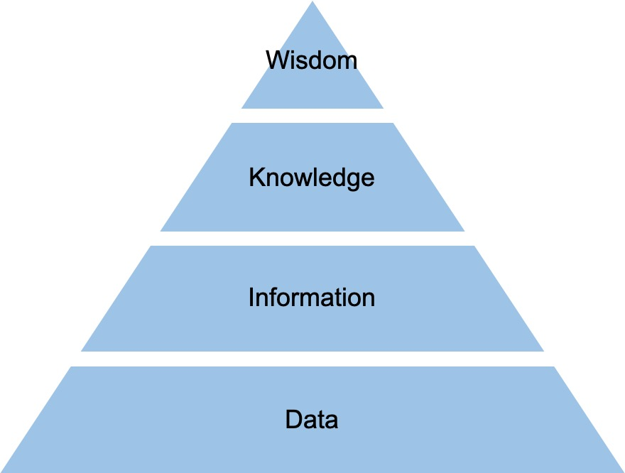

[ADSP]1. ADSP 요약 정리
ADSP 자격증 공부 첫 번째 글,
ADSP 1과목
1. 데이터의 이해
데이터 유형
- 정성적 데이터
- 저장·검색·분석에 많은 비용이 소모되는 언어, 문자 형태의 데이터
- 정량적 데이터
- 정형화된 데이터로 수치, 도형, 기호 등의 형태를 가진 데이터
암묵지와 형식지
| 개념 | 특징 | |
| 암묵지 | 학습과 경험을 통해 개인에게 체화되어 있지만 겉으로 드러나지 않는 지식 | 공통화, 내면화 |
| 형식지 | 문서나 메뉴얼처럼 형상화된 지식 | 표출화, 연결화 |
DIKW

DIKW 피라미드
- Data
- 가공하기 전의 순수한 수치/기호
- Information
- 상관관계간 이해를 통해 패턴을 인식하고 그 의미를 부여한 데이터
- Knowledge
- 상호 연결된 정보 패턴을 이해하여 이를 토대로 예측한 결과물
- Wisdom
- 근본 원리에 대한 깊은 이해를 바탕으로 도출되는 아이디어
데이터베이스 유형
- 통합된 데이터
- 동일한 내용의 데이터가 중복되어 있지 않다.
- 저장된 데이터
- 컴퓨터가 접근할 수 있는 저장 매체에 저장된다.
- 공용 데이터
- 여러 사용자가 서로 다른 목적으로 데이터를 공동으로 이용한다.
- 변화되는 데이터
- 데이터베이스에 저장된 내용은 곧 데이터베이스의 현 시점에서의 상태.
빅데이터
빅데이터 특징
- 3V: 규모(Volumne), 속도(Velocity), 형태(Variety)
빅데이터가 만들어 내는 본질적인 변화
- 사전처리 → 사후처리
- 가능한 한 많은 데이터를 모으고 그 데이터를 다양한 방식으로 조합해 숨은 정보를 찾아냄
- 표본조사 → 전수조사
- 데이터 처리 기술이 감소함. 이로인해 표본을 조사하는 방식에서 전수조사를 통해 샘플링이 주지 못하는 패턴, 정보를 발견하는 방식으로 변화
- 질 → 양
- 데이터가 지속적으로 추가될 경우 양질의 정보가 오류 정보보다 많아 전체적으로 좋은 결과 산출에 긍정적 영향
- 인과관계 → 상관관계
- 데이터 기반의 상관관계 분석이 주는 인사이트가 인과관계에 의한 미래 예측을 점점 더 압도해 갈 것